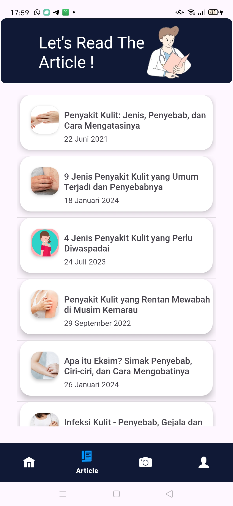
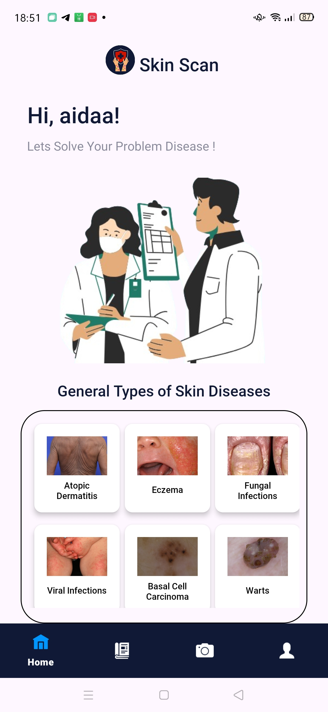

Overview
Sebagai bagian dari Cloud Computing Cohort di Bangkit Academy, saya memimpin pengembangan infrastruktur backend untuk SkinScan — sebuah aplikasi Android yang memanfaatkan Machine Learning untuk mengidentifikasi berbagai jenis penyakit kulit. Peran utama saya adalah menjembatani model AI (yang dibangun oleh tim ML) dengan aplikasi mobile (yang dibangun oleh tim Android) melalui API yang scalable dan reliable di Google Cloud.
The Problem & The Solution
The Problem
Aplikasi berbasis AI di bidang kesehatan membutuhkan sumber daya komputasi yang besar untuk menjalankan model inferensi (prediksi). Menjalankan model tersebut langsung di perangkat pengguna (on-device) akan membuat aplikasi menjadi lambat dan menguras baterai. Selain itu, backend juga harus mampu menangani lonjakan trafik pengguna secara tiba-tiba tanpa mengalami downtime.
The Solution
Merancang arsitektur Serverless Microservices di Google Cloud Platform (GCP). Model ML di-deploy menggunakan Cloud Run (dalam bentuk container) sehingga infrastruktur dapat melakukan auto-scaling — otomatis menambah kapasitas saat trafik tinggi dan mengurangi saat trafik rendah. Saya juga membangun RESTful API sebagai gerbang komunikasi, menggunakan Cloud Storage untuk menyimpan gambar pengguna, serta Firestore sebagai basis data metadata.
Project Gallery

